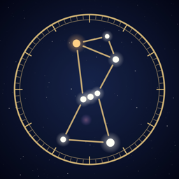

FirmamentumFirmamentum: Sternbilder
Der Himmel über dir – für iPhone und iPad
Firmamentum zeigt den Himmel in Echtzeit für deinen Standort, ganz ohne Internet. Und du siehst, wie verschiedene Kulturen dieselben Sterne zu ganz eigenen Bildern verbunden haben.
- griechisch
- nordisch
- samisch
- Inuit
- Blackfoot
- indisch
- chinesisch
- japanisch
Kontakt
Fragen, Fehler oder Wünsche? Schreib mir. In der App geht das auch direkt: Anzeige-Menü (Knopf mit den Reglern) → ganz oben „Feedback oder Fehler melden“. Dann sind App-Version und Gerät schon dabei.
Häufige Fragen
Wie funktioniert die Bedienung?
Beim ersten Start erklärt die App alles kurz. Du findest die Erklärung jederzeit wieder ganz oben im Anzeige-Menü unter „Bedienung erklären“.
Die App zeigt den falschen Himmel.
Firmamentum braucht deinen Standort. Erlaube ihn beim ersten Start oder später unter Einstellungen → Datenschutz & Sicherheit → Ortungsdienste → Firmamentum. Du kannst einen Ort auch von Hand suchen oder Koordinaten eingeben.
Die Ansicht folgt meinem Gerät nicht.
Mit dem Steuerungs-Knopf unten rechts wählst du: nur Finger, Kompass + Finger oder ganz mit Sensoren. Nur in den beiden letzten Arten bewegt sich der Himmel mit dem Gerät.
Sonne, Mond oder Sterne stehen nicht genau an der richtigen Stelle.
Das liegt fast immer am Kompass. Bewege das Gerät ein paarmal in Form einer Acht und halte Abstand zu Metall, Autos und Lautsprechern. Bleibt eine Abweichung, wische im Modus „Ganz mit Sensoren“ waagerecht, um den Kompass zu korrigieren. Im Anzeige-Menü lässt sich die Korrektur zurücksetzen.
Wie stelle ich eine andere Zeit ein?
Mit dem Zeitregler spulst du den Himmel vor und zurück oder gibst ein Datum ein. „Jetzt“ führt zurück zur aktuellen Zeit.
Wie ändere ich die Sprache?
Im Anzeige-Menü unter „Sprache“. Die App gibt es auf Deutsch, Englisch, Französisch, Spanisch, Italienisch und Japanisch. Die neue Sprache gilt ab dem nächsten Start: Schließe die App dazu ganz (in der App-Übersicht nach oben wischen) und öffne sie neu.
Wie schone ich meine an die Dunkelheit gewöhnten Augen?
Schalte im Anzeige-Menü den Nachtmodus ein. Er färbt alles rot.
Sammelt die App Daten?
Nein. Es gibt kein Konto, keine Werbung und kein Tracking. Einzelheiten stehen in der Datenschutzerklärung.